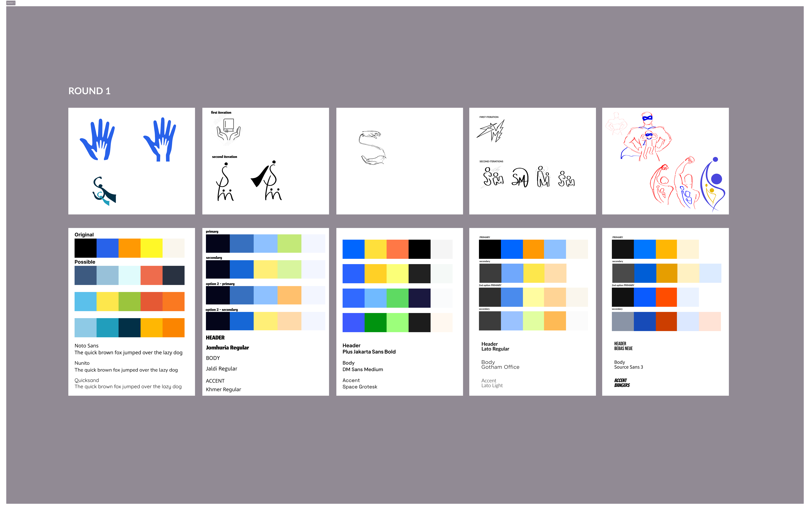
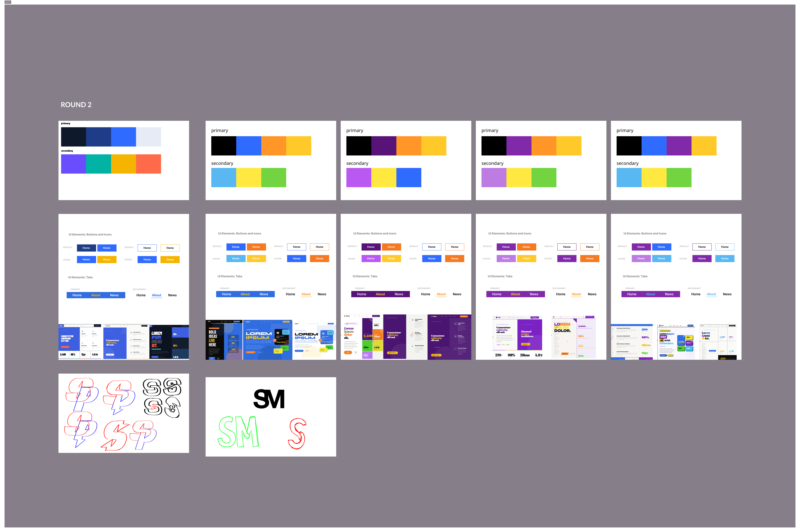
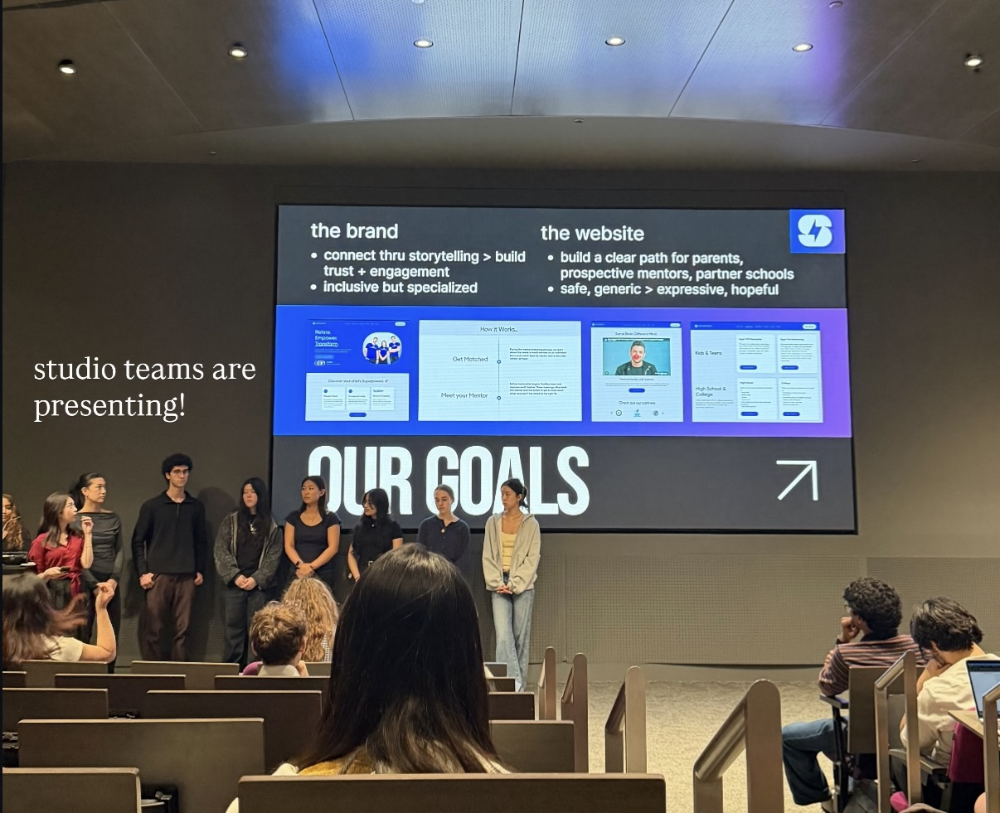

Mentors who’ve been in your shoes.
Superpower Mentors pairs neurodivergent students, ages 7 to 14, with mentors who have been through similar things, so they can help with stuff like confidence, big transitions and figuring out their direction.
The program was already doing amazing work, but their brand and website didn’t really show that, which is where we came in.
In their program, the freshman dropout rate went from 30% to 0%.
Their brand didn’t match how good the program is.
When we first looked at their old brand, it felt really safe and generic, and it didn’t say much about who they are or why the program works. The website also had to work for three really different groups of people, and each of them was coming to the site looking for something different.
So our goal was to make the brand feel more expressive and hopeful, and to make sure everyone who landed on the site knew exactly where to go.
One website for three kinds of people.
What it was like being the lead.
I was the UX design lead and the stakeholder liaison, so I was the bridge between our team and the client, and the spokesperson for my teammates. Every week I met with the founder to present our progress, listen to their feedback and bring it back to the team.
On the team side, I held design crits and reviews every week. I would talk through every wireframe our designers made, ask why they made their design choices, give suggestions, and help fix anything that wasn’t working yet. I also held design office hours, so anyone could come to me in between, and I led the design direction from the wireframes all the way to the final hi fi screens.
- Jessica LuoProject lead
- Rachel Chen (me)Senior designer
- Ivy TangSenior developer
- Diana RudolphJunior designer
- Katherine JiangJunior designer
- Nina RosheJunior designer
- Carolyn HoaJunior dev and design
- Adrian RodriguezJunior developer
- Esha KanakapuraJunior developer
- Kaelynn LackeyJunior developer
The biggest thing I learned
Knowing when to put a hard stop on iterations. Every time we came back with something new, the client had something new to say. By round three, we were running out of time in the semester, so I had to put my foot down: we had given them so many options and opportunities, and this would be our last iteration round.
It wasn’t easy to say, but being a lead means speaking up for your team and keeping the project moving, not just saying yes to every change.
We’ve given you so many options, so this is our last round.”
Checking in with the client every week.
Every week we showed the client where we were at, got their feedback, and made changes right away, so we were always designing around what they actually needed and not what we assumed.
We started with user flows and a sitemap, then wireframed all six pages: Home, How It Works, Mentors, Insights, About Us and Community. We got critiques at every step before moving into hi fi.

Finding the right look
We explored five different logo directions, from hand illustrated figures to more abstract marks, before landing on the final one. The colors went through a few rounds too. The original palette felt really busy, so we narrowed it down to black, purple, orange and yellow, with lavender, gold and blue as supporting colors.
The UI components took three rounds before the client signed off.



A website where everyone knows where to go.
The final website brings everything together, with bold type, a warm and energetic palette, and navigation that takes parents, mentors and schools exactly where they need to go.

Showing it off at showcase
At the end of the semester, we presented the whole project to the entire club and our stakeholders, and walked everyone through it from the very first client brief to the final website.
Leading the design team through weekly client meetings and ending with something the client was really happy with was one of the most challenging but rewarding things I did at Northeastern.
